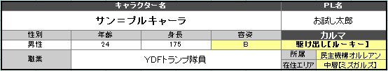

①プロフィールを決める。＞＞NEXT
名前、性別、年齢、容姿、身長、在住エリア、所属、職業を決めてキャラクターのプロフィールを決定しましょう。 ↓エクセルのステータス算出表では以下の場所に名前など入力。  |
| 名前 | 日本系、中国系、欧米系などなんでもＯＫ。 |
| 性別 |
男性or女性。性別不明やオカマなどもＯＫ。 以下のランダム表から決定してもＯＫ。 |
| 年齢 |
設定自由。下記のランダム表から決定してもＯＫ。 ただしユグドラシルの歴史は１００年なのでそこも踏まえて設定をお願いします。 |
| 身長 | 設定自由。下記のランダム表から決定してもＯＫ。 あまりに巨大な身長はＧＭと相談下さい。 |
| 容姿 |
Ｓ～Ｅから選択。 下記のランダム表から決定してもＯＫ。容姿の目安もランダム表で確認下さい。 容姿による補正はシステムには組み込まれていませんが、 ロールプレイの楽しみとしてご利用ください。 ＧＭ裁量で容姿をもとにボーナスを与えてもＯＫです。 |
| 在住エリア |
在住エリアは - 上層 - 中層 - 下層 - 不明 以上の４種から選択可能。 在住エリアによって行動範囲や制限が出る可能性がありますのでご注意ください。 不明というのは不特定多数のところに住んでいたり、 市民登録をしていない場合などを指す。 ※在住エリアは所属の管轄エリアである必要はないが、 【司法機関グングニル】を選ぶ場合は在住エリア【不明】は選択不可。 |
| 所属 |
所属は - 司法機関グングニル - 民主機構オルレアン - 抑制機構テセウス - ルーン企業連 - チーム世紀末覇者 - 闇商会スヴァルトアルフ - フリーランス 以上から選択できる。 各勢力については世界観を参照ください。 |
| 職業 | 自由に作成・選択してＯＫ。 現代社会における基本的な職業は選択できると思っていただいて結構です。 ※外界と隔離された島であるため、航空士や宇宙飛行士などは選択不可。 下記の職業例一覧も参照下さい。表にない職業もＯＫです。 職業によってはロールプレイ時にはなんらかの恩恵が与えられる場合もあるでしょう。 |
|
|
|
||||||||||||||||||||||||||||||||||||
|
||||||||||||||||||||||||||||||||||||||